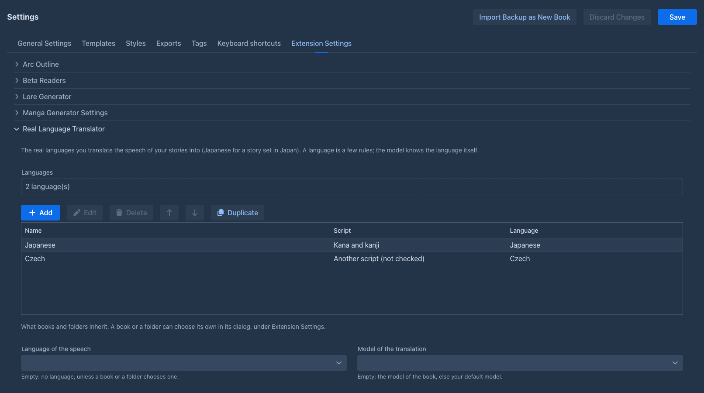
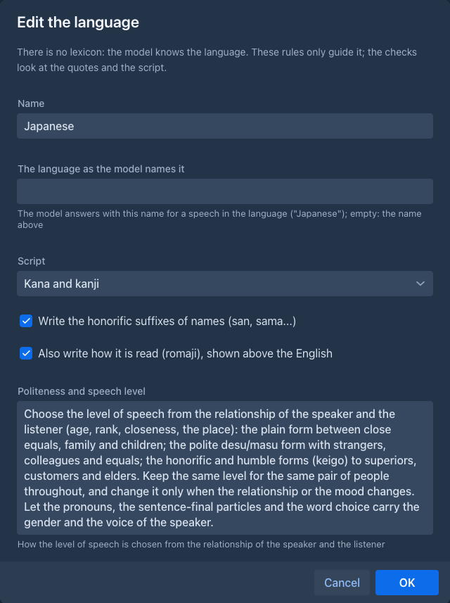
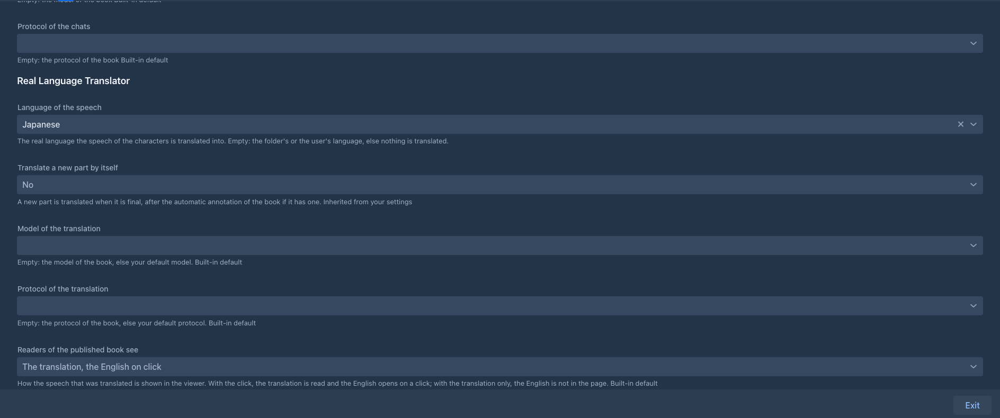
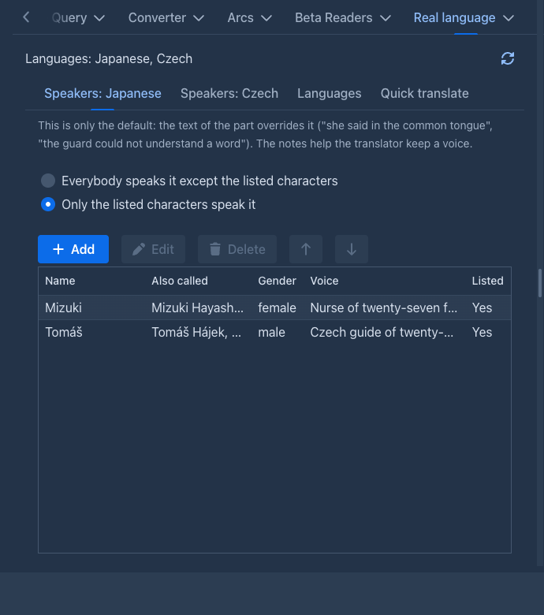
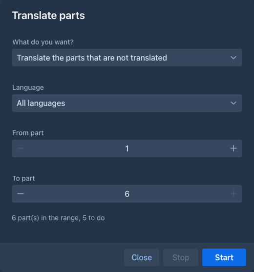
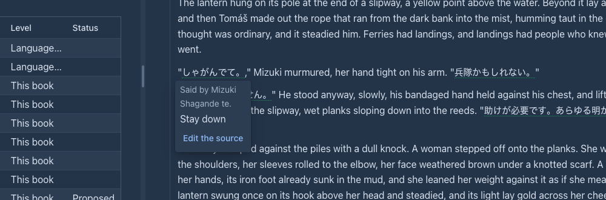
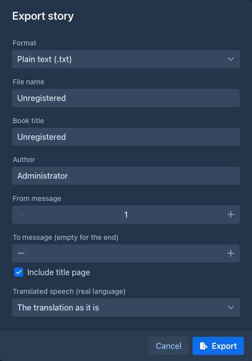

Real Language Translator
Lets the characters of your story speak a real language: a story set in Japan can be written in English by you and the model, and the direct speech of the characters becomes authentic Japanese (kana and kanji, or romaji), with the English kept behind it. It is the Conlang Translator for a language that exists: the same idea and the same screens, without a lexicon.
The text of the story holds the translation. Everything that reads the story to a model (the next generation, the summaries, the lorebook scan, the annotations, the other extensions) reads the English the speech was translated from, so you write and steer the story in English. A click on a translated speech shows the English.
Work in progress
The translation of parts, ranges and sentences, the settings, the tab of the book, the viewer, the export and the
The idea
-
A language is a short set of rules for the translator: the script (kana and kanji, kana only, romaji), whether the honorific suffixes of names are written, how the level of speech is chosen from the relationship of the speaker and the listener, how names are written, and anything else you want held to. The model knows the language itself, so there is no lexicon. Languages are kept in your settings, once, and any number of books use them.
-
A book (or a folder of books) chooses its language. A part is translated by hand from its menu, by itself when it is final, or a range at a time.
-
One request to the model per part classifies every direct speech (is it said in the language, or in English, by this character, understood by the listener?) and translates the speech that is, in the voice and the level of speech the character and the relationship ask for.
-
The English is kept (in the data of the book, as the source of the speech) and read by every model. The translation is the original: what you change in it by hand stays, and a part you edit is never overwritten behind your back.
The extension checks what it can for free: the quoted speech must be in the part, the language must be the book's, and the translation must be in the script you asked for (a romaji translation with kanji in it, or a kana-only one with kanji, is kept and reported). It cannot check the Japanese itself: read a few parts before a long run.
Languages
A language is edited in Settings → Extension Settings → Real Language Translator.
The editor has these fields:


Below the list are the choices that books and folders inherit from you: the language, whether a part is translated by itself, and the model and protocol of the translation. Save the Settings screen to keep your changes.
Choosing the language of a book
The Prompts tab of the book window, under Extension Settings, has the fields of the extension; the folder window has the same. Empty means inherit: the folder above, then your settings.

The Real language tab of the book
The story window has a Real language tab (in the same dock as the chapters and the lorebook) for the language of this book, with Refresh to read it again.

Speakers. Who speaks the language in this book (a book with
Each character can also have a level of understanding: understands nothing, knows a few words, follows most of it or follows everything. Leave it empty (or follows everything) and the
models are told nothing. Use it for the people who hear the language without speaking it: Tomáš: understands nothing (Japanese), Other villagers: follows most of it (the name is only text, so a group works). The levels are
static for the whole book and are handed to the models as information; what a character does with it is up to the model, and you can always say more in the instructions ("Tomáš does not understand what they say").
They reach the models in two ways: the story model gets a short message with the levels (inserted into the prompt like the Author's Note; the checkbox above the list turns it off and the number says how many
messages from the end it goes), and the model that reviews a part (Annotate with AI) gets them as a section of the facts, so it can flag a character who reacts to words they cannot follow. If you would rather
place the text yourself, turn the insertion off and use the {{command::reallang-understanding}} macro in a template; it takes an optional list of characters to keep.
Languages. The other languages of the book, besides the one its Language of the speech field names: see
Quick translate. Write a text in English, optionally who says it and to whom, and press Translate: the model translates it with the rules of the language (with several languages, choose which one). Nothing is written into the story; you copy the translation.
Glossary. How the names and the special words of the story are written in the language (a
The glossary of names and special words
Without a glossary the model chooses again in every part how a name is written: Saellen is サエレン in one part and stays in Latin letters in the next, Tomáš becomes トマーシュ or トマシュ. The glossary fixes the choice once. An entry has
- the word as the story writes it (
Saellen,witch), the key of the entry, the case does not matter; - how it is written in the language (
サエレン,魔女), or keep it as it is for a title, a place or a made-up term that is not translated; - how it is read (optional, for a language with a reading:
魔女readウィッチ), and a note for the translator (the honorific the character gets, the order of the family name); - whether it applies.
Three levels, merged. The glossary of a language lives at three levels: the language (in its editor, in Settings → Extension Settings: the names and terms of every book in this language), the folders the book is in (a series defines the names its books share; the folders nest) and the book (its own, the one used most). The model gets the union; for the same word the nearest level wins, so a book can write a name another way than its folder does. The Glossary tab of the Real language tab shows all of them with the level each entry comes from and changes an entry where it lives. A word of a higher level that this book should not use is switched off for this book (an entry of the book that is off; switch it on again the same way, or delete it to get the higher level's word back). An entry of the book can be moved up to a folder or to the language when it turns out to be common. The glossary of a folder and of a book is kept for each language of the book, because a name is written another way in every language.
What the translation does with it. The glossary is part of the request, so the model writes the words as listed. A glossary of up to 100 entries goes whole in every request (a server that caches the prompt reads it once); a bigger one goes with the entries the part has. After the answer the plugin checks it: a speech whose English has a word of the glossary but whose translation does not write it as the glossary says is kept and reported (the author decides). A name the model had to choose a written form for, that the glossary does not list, is added to the book's glossary as a proposal (the Status column says Proposed): the model uses it from then on, and Accept says you looked at it, or Edit changes it. A word that any level has already (even switched off) is never proposed again.
The commands for it are in the table below. A part that a book translated before the glossary existed keeps its translation; translate it again to use the glossary.
Extracting the words by model
Writing the glossary by hand is slow for a long book. The Word extraction tab (next to the glossary tabs of the Real language tab) has the model read a range of parts and list the names and special words it finds, with the form each has in the language. Everything it finds that the glossary does not have yet is added to the glossary of the book as a proposal: the model uses it from the next request on, and you accept, edit or delete it in the Glossary tab. Nothing in the story changes.
- Language. With more than one language in the book, the language the glossary is for.
- Prompt. Instructions for the model: what to look for and how each kind of word is written in the language. Choose one from the library, or None: only my specification. The plugin comes with a prompt for Japanese (real-world places and organizations in their usual Japanese form, made-up foreign names in katakana, Japanese names in kanji with the reading, coined terms of the world as kanji with a katakana reading, gikun); it is marked built-in and is always there.
- Specification. Free text for this book, added after the prompt: what to leave out (minor characters), how to write a kind of word here, a spelling you want. With no prompt it is all the model is told.
- From part / To part, then Extract the words. The parts are read one after the other (a part is minutes of a slow model's time), the tab shows Part 3 of 12, Stop stops after the part that is being read. A part that fails is counted and the run goes on; a book with no language, no model, or neither a prompt nor a specification ends the run.
The words the glossary has already (at any level, even switched off) are told to the model and are not proposed again, so a second run over the same range adds only what is new. The category the model put a term in ("Fictional coined term / gikun") is written into the note of the entry. You do not describe the output: the plugin asks for a fixed format, whatever the prompt says.
The library of prompts. Settings → Extension Settings → Real Language Translator has the Extraction prompts list: your own prompts with a name and the instructions, to add, edit, delete and reorder. Copy a built-in prompt puts a copy of the built-in one in your list to change. The prompts belong to you, not to a book; a book remembers which one it chose and its specification.
More than one language in a book
A story with Japanese and Korean speakers needs both. A book names one language first (the field above, which a folder or your settings may also give) and the Languages tab adds other languages from your library, one by one, and takes them away again.
-
Each language has its own speakers, in a tab of its own. The first language is spoken by everybody except the characters you list, as before; a language you add starts as "only the listed characters speak it" with nobody listed, so it is not asked for anything until you list who speaks it. List a character as an exception of the first language when another language is theirs, or the first language is asked for their speech too (a speech two languages claim stays with the one that is asked first). A character may speak more than one language (list them in both; the text of the part tells the model which one a speech is in).
-
One request for each language: the rules and the notes of one language, and only the speeches of its speakers. A part with the speech of two languages takes two requests, one after the other; the second reads the part with the English of the first one's speeches and leaves those speeches translated. A part whose point of view and present characters are all outside the speakers of a language is not asked for that language (a part that names no character is asked for every language that has speakers).
-
A passage knows its language. Translate the speech again for one language leaves the speeches of the others alone, and Put the English back can be for one language or for all.
-
The menus ask which language when the book has more than one: the menu of a part (one of the languages or All languages) and the right click on a selected sentence (one language). Translate parts has a Language field (all languages by default); the parts that are not translated means "not translated in that language".
-
The automatic run translates a new part into every language whose speakers may be in it.
Translating
-
By hand: the menu of a part has Translate the speech (real language). A part that is translated already is translated again from its English. A book with more than one language asks first
which one . -
By itself: with Translate a new part by itself, a generated part is translated as soon as it is final. A regenerate of a part gives it new English and removes the old translation.
-
A sentence you wrote: select it in the text of a part, right click and choose Translate the selection (real language). The model translates it with the story around it; the English is kept as the source. A selection that holds a translated speech is refused.
-
A range: Translate parts (real language) in the tools menu of the story opens a window that stays open beside the story: Translate the parts that are not translated, Translate the translated parts again or Put the English back, from a part to a part, with a Stop.

A translation is stored like any change of the text: the history of the part gets a version, the part is not marked as edited, and the English is kept. A speech you changed by hand is left as it is when the part is translated again or put back to English, because it holds your words.
What the reader sees
A translated speech has a dotted line; a click on it shows the English in a popover: the reading (when the language asks for it), who said it and whether the listener does not understand it, and a red note when you edited the translation after it was made.
Edit the source (a button in the popover, in your own views only) opens a window with the translation as the story has it and the English the models read. Use it when a native speaker corrected the
Japanese by hand and the English says something else now, or when the model got the English wrong. Saving gives the speech its new English, takes the translation as it is now as the one the English belongs
to (the red note goes away) and the models read the new English in its place. The text of the part is not changed. reallang-edit-source does the same from the command line.
Search and replace in the sources (the button with the arrows at the top of the Real language tab) opens the application's search and replace window over the English sources of the translated speeches of the active branch (plain text or a regular expression). Only the sources change; the words of the translation itself are replaced with the search and replace of the book.

The published book shows it the way the book asks, with Readers of the published book see: the translation, the English on click (the default), the translation only (the English is never sent to the reader's browser) or the English only.
Exporting
When the book has translated speech, the export dialog has the field Translated speech (real language): the translation as it is, the English only, the translation with the English in footnotes or the English with the translation in footnotes. The stored text of the book is never changed by an export.

Together with the Conlang Translator
A book may hold both: an invented language for the elves and Japanese for the town. Each plugin has its own speakers, its own language setting and its own passages, and the passages of the two do not touch each other. The English every model reads has both back. The export combines the footnotes of both in one numbering, and the viewer draws the speech of both in the same page. Set the same value in Readers of the published book see for both: one page is drawn once, by the plugin that gets to it first.
Commands
Everything the screens do is also a command, for the command line and for agents. A language is addressed by its name (the case does not matter) or its id; a part by its handle or its position on the active branch (the first part is 1).
A language is a few lines of rules and has no working copy for an agent run (the Conlang Translator copies a language with its lexicon): an agent that creates or changes a language changes your library at once. The speakers, the settings of the book and the passages are the book's, and the run's copy of the book carries them.
Limits
-
The quality is the model's. Politeness is the hard part of Japanese; the rules and the notes on the characters guide it, a few parts read by a person decide whether they are enough.
-
Speakers decide which languages are asked for, from the point of view and the characters present of a part. A speech by a character the part does not name can be missed by a language whose speakers are listed; the text of the part decides inside a request.
-
No second pass that rewrites a translation for naturalness, and no back-translation check yet.
-
No furigana. The reading is a line in the popover, not ruby text in the page.
-
A part that the other translator plugin translated is read by this model with that translation in the text (not its English); it is told only that the speech there is in another language.
-
A phone has the panel and the editor; the story side (menus, range window, click in the story) was not tried there.